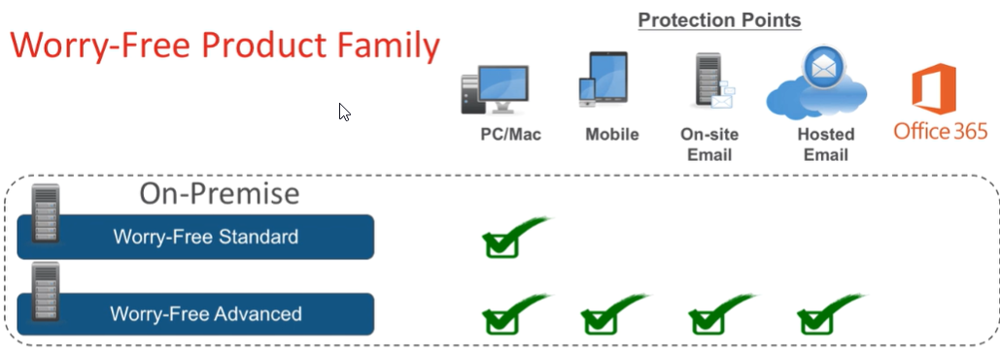

Any price security
SaaS ou On-Premises
A diferença entre os dois é simples: enquanto um software fica na nuvem e é disponibilizado como serviço, o outro é instalado nos servidores locais da empresa, e é um produto.
4 versions for Worry-free available(worryfree.com)
Worry-Free Product Family
- review the target customer model to choose the specific for that client
1) On-Premise:
Host in the customer environment e só pode ser acessado por esse ambiente do cliente ou a partir de uma vpn
Customer has cost concerns or limited budget(despesas)
Customer does not need to protect email
- dont want to do any maintenance
looking for a SaaS solution

Worry free Standard
- When insists on installing management server in their own environment
- Has cost concerns or limited budget
Worry-Free Advanced
- When insists on installing management server in their own environment
- Still uses an on-premise Exchange Server
2)SAS
- can acess from many locations
- no up=front capital investment
- no maintenance
- subscription pricing

Worry-free services advanced
- cUSTOMER USES oFFICE 365
-Concerned about Ransomware
- dont want to do any maintenance
looking for a SaaS solution
TELA PARA ACESSAR OS SERVIÇOS DE SEGURANÇA

Worry-Free Protection Feautures
Tradicional Protection Features Next-Gen Protection Features


Behavior: signature
Worry-Free Supported Platforms

Other features:
- Intelligent Pattern Distribution(Active Agent) Central update source from the device of the network / Any configuration required for the adm
-Uninstall Protection / Stopping for uninstall the product
-Reports(Scheduled and Manual) / On demand or schedule via email
- Scans (Scheduled and Manual)
- Quickbook (database) Protection
- Co-adm (many people can use and adm the software)
- Competitive Uninstallation: Prevent conflits and resources contention??(Competitive programs during the installation time)
- Remote manager Integration(centralize)